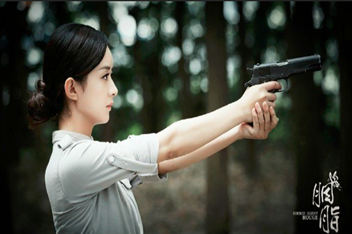
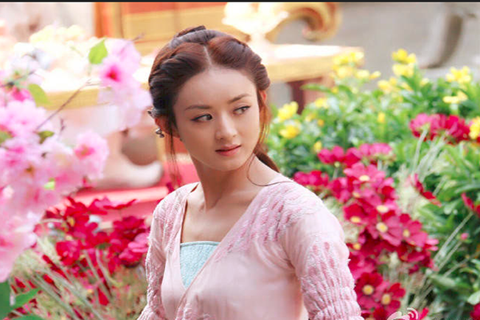
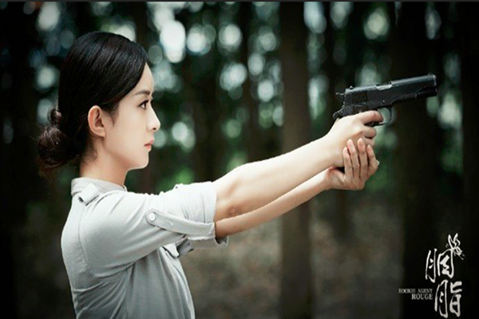
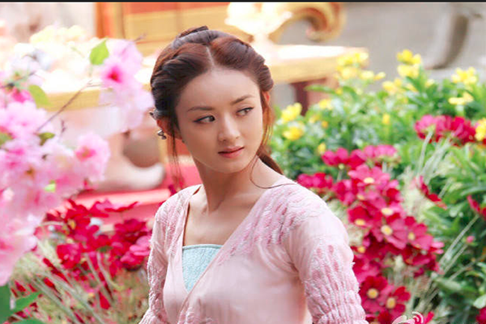

她是一个很真实的人,面对镜头的时候显得有点讷于表达，不会说漂亮和活络气氛的场面话，甚至有时候她显露的真实个性更接近于男生的直接、简单。这样的她让我们无法不喜欢。
如颖随行
本将秋草并，今与夕风轻。腾空类星陨，拂树若生花。屏疑神火照，帘似夜珠明。逢君拾光彩，不吝此生轻。
十年艰辛难自知，玉绦寞寞却并习。
千骨至今悠悠谈，碧瑶又没银屏坛。
昔日双痕迹犹在，金鹰台上望君欢。
颖火永恒相依伴，化星摇翼诉牡丹。
赵丽颖是一位人气与实力兼具的演员，她凭借着执着、坚忍不放弃的心态，经过了十年的潜心琢磨与学习，她的演技有了很大的进步，通过一个个经典的角色征服了全国大部分观众的心，
2016年10月因花千骨一角获得中国电视金鹰奖观众喜爱的女演员，还因在老九门中的出色表现获得横店影视文荣奖最佳女主角奖，等等，这些都是对她最好的肯定。
她虽然现在已经名声大噪，但她从没忘本，始终保持一颗积极向善的心，积极参与公益、慈善活动。
陆贞传奇从宫女到女相的逆袭，再现陆贞坎坷传奇又励志的一生。
杉杉来了由小说《杉杉来吃》改编的爱情偶像剧，讲述的是都市小职员薛杉杉和大BOSS封腾之间爱情故事。
花千骨该剧改编自fresh果果同名小说，讲述少女花千骨与长留上仙白子画的爱情故事 。
青云志作为正道第一大派青云门与鬼王宗等魔教势力之间相互争斗，少年张小凡无意间牵扯其中的历险故事。
追鱼传奇该剧讲述了幻化人形上岸为龙王选寿礼的鲤鱼精红绫，机缘巧合偶遇青年书生张珍。
我们的十年电影讲述了三个性格各异的女孩携手走过人生中最美好的十年，朝着各自的人生目标懵懂成长的故事。
女汉子真爱公式影片讲述了”女汉子“何修舞用自己推导的“真爱公式”寻找“完美恋人”的故事。
宫锁沉香自十三岁入宫当宫女的沉香与十三阿哥胤祥之间的爱情故事。
一路惊喜影片由六个风格迥异的故事组成，讲述一群人在除夕当日发生的一连串奇遇囧事。